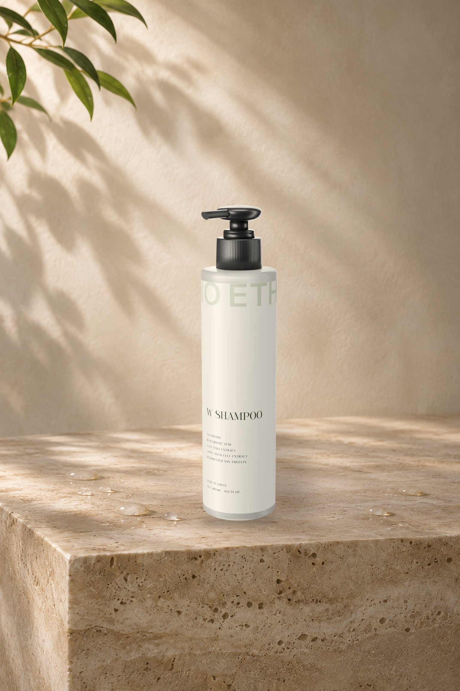
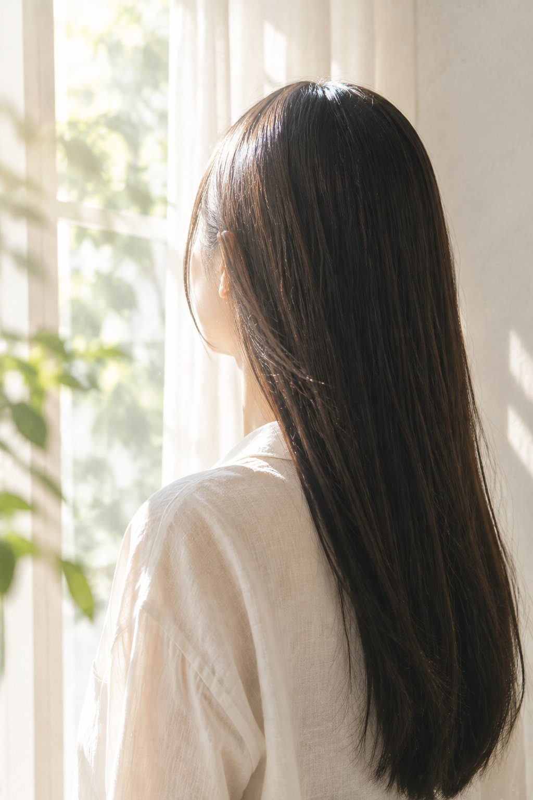
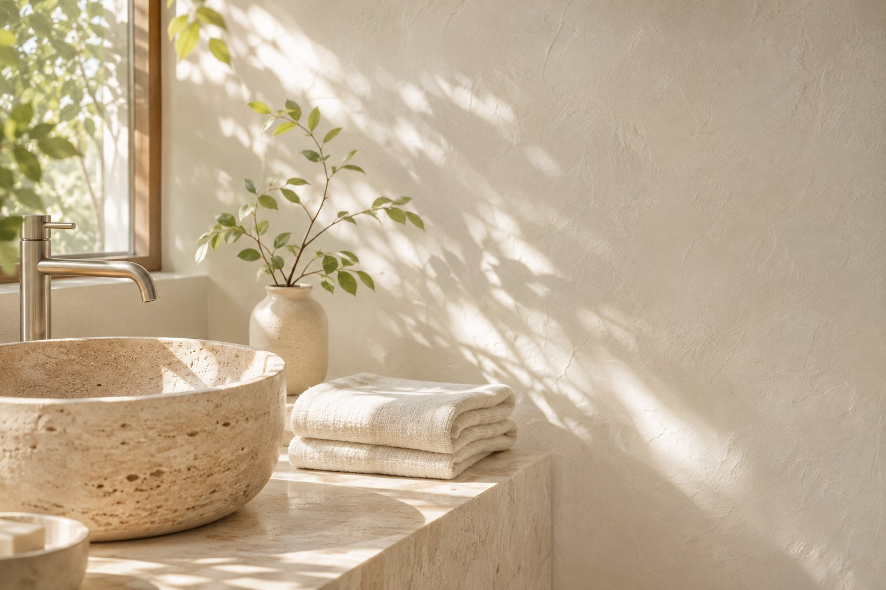
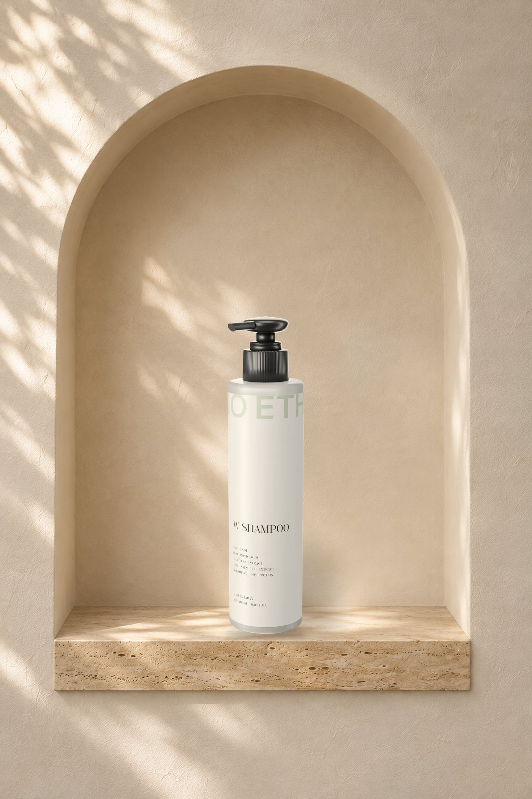

Wano Ethos
広告動画（30秒・15秒）と、LP改訂のご提案
— いただいたご意見を反映した改訂版 —
AI mania 志田 ケイスケ ｜ 2026.11

01Your Feedback
この方向はそのまま保ち、写真をすべて高い解像度で作り直しました。
最上位の映像生成モデルで全カットを作り直しました。動きはゆっくり・小さく絞り、肌や髪の質感、指先の自然さを優先しています。
ご指摘の2つの言葉と、それに由来する英語の名称は、動画・LP・本資料から外しました。
コピーは現在のLPの文言をそのまま使用しています。新しい名称やコンセプトの追加は行いません。
ボトルではじまりボトルで終わる構成に。洗髪の場面にも商品のコピーを重ねています。15秒版は同じ素材から商品の比率を上げて編集します。
商品カットは支給のボトル画像を使用。それ以外はAI生成と、必要に応じて適切なストック素材で構成します。撮影は前提にしていません。
02Approach
「指先が、記憶する美しさ。」「二度洗いで、地肌まで。」「頭皮ケアまで、シャンプー1本で。」— 既存のコピーと、オールインワンという商品の軸。
光の向き、色、素材の質感、余白。動画・LP・広告サムネイルで同じ空気が続くよう、見た目だけをそろえます。
ボトルと、地肌に触れる指先。コピーの「指先」を、毎回かならず画として見せます。
表現はすべて化粧品の範囲（汚れを落とす・うるおいを保つ・すこやかに洗い上げる）に収め、育毛・発毛・頭皮の改善を連想させる表現は使いません。
0303Visual Rules
見出しは明朝体、英字は細いセリフ体、本文は細めのゴシック。字間と余白を広めに。
04Video A — Product
ロゴと商品名。ボトルの上を光がゆっくり横切る。
コピー「二度洗いで、地肌まで。」
泡の質感と、洗ったあとの表情。
コピー「頭皮ケアまで、シャンプー1本で。」
「指先が、記憶する美しさ。」＋商品名・容量。
本番では環境音をさらに作り込みます。TikTok向けの15秒版は、この30秒から編集します。
0505Video B — Morning



朝の場面からはじめ、3秒目で商品を見せます。動画Aと同じ素材・同じ光でつくるため、2本を並べても世界観がそろいます。動画Bの映像は、構成のご確認後に制作します。
0606Production
支給のボトル画像を、光の向きと影を合わせて背景に合成。ラベルは加工しません。
同じ人物・同じ光で、場面ごとの静止画を先に固めてから映像にします。手の形まで確認します。
ゆっくりした小さな動きだけを指定。不自然なカットは採用せず、作り直します。
色の統一、フィルムの粒子、コピーの文字組み、環境音と音楽。
より動きのある人物カットが必要な場合は、適切なストック映像の使用もご提案できます。
0707Landing Page
文章は現在のLPの内容をそのまま活かし、構成と見せ方だけを整えています。
LP改訂案を見る →Next
色・光・テンポ・コピーの出し方など、ご意見をいただければ反映いたします。
方向が合えば、音を入れた動画Aの完成版と、動画Bの映像に進みます。
AI mania 志田 ケイスケ